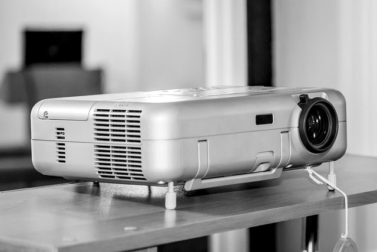
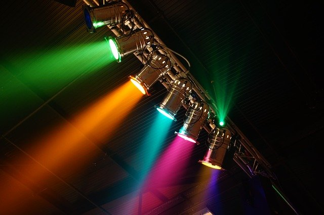
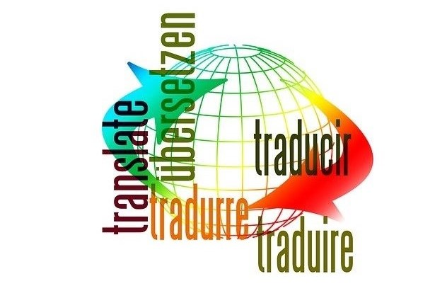

Üdvözletem Kedves Látogató!
Helmeczi Mihály vagyok, a HeMi Sound megálmodója. Célom, hogy kamatoztatni tudjam a szakmai tudásomat és
hátteremet a rendezvények lebonyolítása terén, ezálltal MINDEN Megrendelő mosolyogva, elégedetten távozhat az
esemény végén.
Az ötlettől a megvalósulásig sok idő telt el, ezalatt rengeteg tapasztlattal, tudással gyarapodtam.
Egyszemélyes vállakozásként kezdtem, de mostanra egy olyan szakmai elhivatottsággal és precizitással
rendelkező csapat jött létre, amelyre bárki számíthat, egy-egy kérdés, kérés, probléma megoldással
kapcsolatban.
Csapatomat erősítik fénytechnikus, hangtechnikus, videótechnikus, tolmácstechnikus kollegák, IT szakik, és DJ-k
is.
Szolgáltatásaink közt megtalálható a rendezvénytechnikai eszközök bérbeadása, vagy a komplett rendezvény
technikai lebonyolítása is. Legyen szó konferencia, családi nap, esküvő, születésnap, többnapos fesztivál,
vagy
esetleg egy online streamelésről, számunkra nincs túl kicsi vagy túl nagy feladat. Törekszünk a felső-közép
és
felső kategóriás eszközök beszerzésére, így mindenki megtalálhatja az igényeinek megfelelő megoldást.
Amennyiben
nem talál valamit, amire szüksége lenne, keressen minket bizalommal!
Videótechnika

Mindenki szeretné jól látni a kijelzőn megjelenő előadásokat, ábrákat, videókat, vagy magát az előadót!
Nincs akadálya ennek ! Cégünk rendelkezik megfelő eszközökkel , legyen szó több kamerás felvételről, egy
egyszerű prezentációról, a pulpitus mögött álló előadó nevének kíírásáról vagy a rendelkezésre álló idő
megjelenítéséről, esetleg ennek a kombinációiról ! Különböző méretű kijelzők, vásznak, LEDFAL áll a
rendelkezésünkre, az igényeknek és a helyszínnek megfelelően.
Hangtechnika
Szemináriumok, konferenciák esetén szükséges lehet az előadó(k) hangjának felerősítésére, esetleg
prezentációik videót tartalmaznak, aminek a hangját is szeretnék megmutani a közönségnek. Semmi
probléma,
Cégünk tudja biztosítani a tökéletes hangzás feltételeit egy - egy konferencián. Ehhez szakképzett
hangtechnikusok felügyeletével a megfelelő eszközöket is tudjuk biztosítani.
Fénytechnika

Egy többnyelvű eseményhez szükséges lehet tolmácstechnika is. Cégünk tolmácstechnikával is hozzá tud
járulni a konferencia sikeréhez. Szakértő kollegákkal, és akár 32 tolmácsolt nyelv elosztó rendszerrel
tudunk szolgálni, mely a legkomolyabb igényeket is kiszolgálja, legyen szó egy fordított nyelvről, vagy
akár
32 különbözőről.Továbbá lehetőség van delegációs mikrofon rendszert is bérelni, ami összeköthető a
tolmácsrendszerrel, és akár automatikus kamerarendszerrel, mely ráfordul az aktuális felszólalóra. A
tolmácstechnika hallókészülékek esetén is megfelelő lehetőséget nyújthat a konferencia hallgatására.
Tolmácstechnika

Egy többnyelvű eseményhez szükséges lehet tolmácstechnika is. Cégünk tolmácstechnikával is hozzá tud
járulni a konferencia sikeréhez. Szakértő kollegákkal, és akár 32 tolmácsolt nyelv elosztó rendszerrel
tudunk szolgálni, mely a legkomolyabb igényeket is kiszolgálja, legyen szó egy fordított nyelvről, vagy
akár
32 különbözőről.Továbbá lehetőség van delegációs mikrofon rendszert is bérelni, ami összeköthető a
tolmácsrendszerrel, és akár automatikus kamerarendszerrel, mely ráfordul az aktuális felszólalóra. A
tolmácstechnika hallókészülékek esetén is megfelelő lehetőséget nyújthat a konferencia hallgatására.